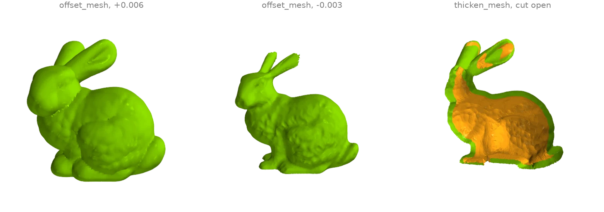
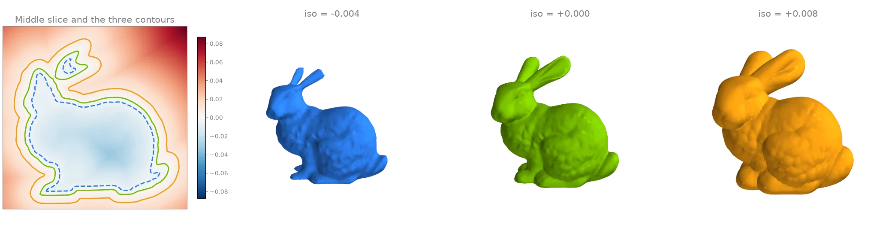
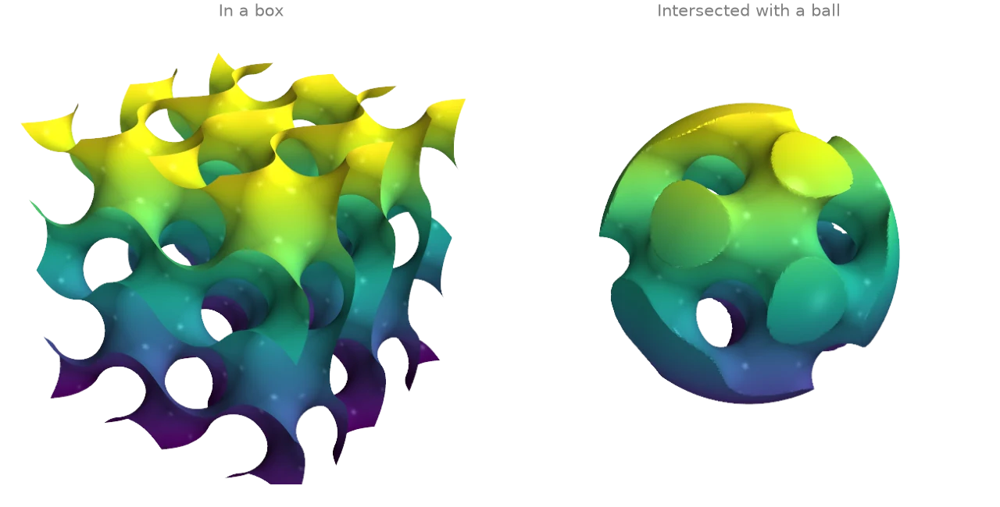
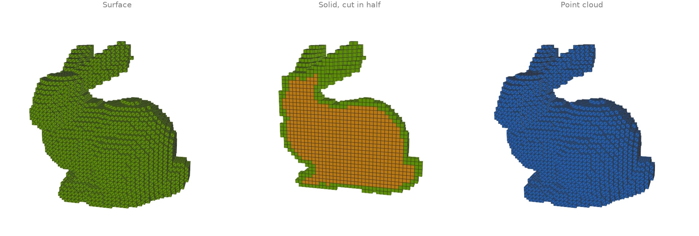
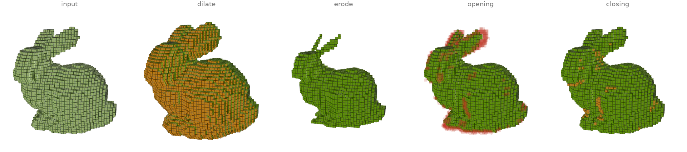
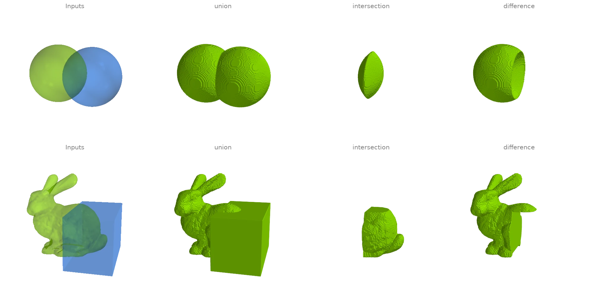
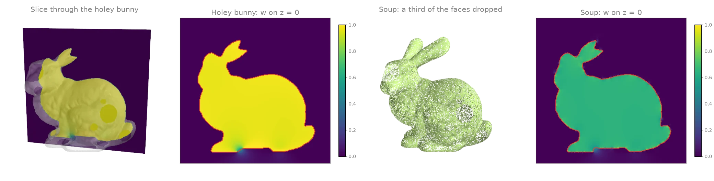

Offsets, voxels and implicit surfaces
Signed distance fields, offsets, marching cubes, voxelization and the winding number.
Offset, thicken and shell
offset_mesh moves the surface by a signed distance through
the level set of its distance field, so concave regions and thin parts are handled exactly:
growing rounds over the creases, shrinking thins the ears down to their last voxels.
thicken_mesh instead keeps the input's own triangulation:
it displaces a copy of every vertex inward along its normal, reverses it and joins the two
layers along the open rims, giving a shell (shown cut open, inner layer orange).
import ordito as od
from examples import data
vertices, faces = data.load("bunny", device)
grown = od.levelset.offset_mesh(vertices, faces, 0.006)
shrunk = od.levelset.offset_mesh(vertices, faces, -0.003)
shell = od.levelset.thicken_mesh(vertices, faces, 0.006)
for name, (v, f) in {"grown": grown, "shrunk": shrunk, "shell": shell}.items():
print(f"{name}: {f.shape[0] // 3} faces, volume {od.measures.volume(v, f):.3e}")
grown: 53856 faces, volume 1.150e-03
shrunk: 141636 faces, volume 5.941e-04
shell: 139348 faces, volume 2.917e-04

Modelled on: MeshLib: offset
Signed distance field and its level sets
signed_distance_grid samples the signed distance
to the bunny on a regular lattice (negative inside; the winding-number sign copes with the
open base). One slice of the field is shown on the left with its zero contour, and
marching_cubes extracts three of its level sets: inside,
on and outside the surface.
import ordito as od
from examples import data
vertices, faces = data.load("bunny", device)
field, bounds = od.proximity.signed_distance_grid(
vertices, faces, voxel_size=0.0015, pad=8, sign_mode="winding"
)
distances = field.numpy()
print(f"lattice {distances.shape}, from {distances.min():.4f} to {distances.max():.4f}")
levels = {}
for iso in (-0.004, 0.0, 0.008):
levels[iso] = od.levelset.marching_cubes(field, iso, bounds=bounds)
print(f"iso {iso:+.3f}: {levels[iso][1].shape[0] // 3} faces")
lattice (120, 119, 97), from -0.0402 to 0.0994
iso -0.004: 58500 faces
iso +0.000: 74428 faces
iso +0.008: 102496 faces

Modelled on: libigl 704 · Open3D: distance queries · MeshLib: signed distance
Meshing an implicit surface: the gyroid
Any scalar field sampled on a lattice can be meshed by
marching_cubes. The gyroid
sin x cos y + sin y cos z + sin z cos x = 0 is a triply periodic minimal surface; on the
left it fills a box, on the right the field is combined with a sphere's signed distance
(their maximum is the intersection of the two solids) to cut a closed gyroid solid out of a
ball.
import numpy as np
import warp as wp
import ordito as od
n, extent = 160, 2.0 * np.pi
x, y, z = np.meshgrid(*[np.linspace(-extent, extent, n)] * 3, indexing="ij")
gyroid = np.sin(x) * np.cos(y) + np.sin(y) * np.cos(z) + np.sin(z) * np.cos(x)
in_ball = np.maximum(gyroid, np.sqrt(x**2 + y**2 + z**2) - 0.95 * extent)
bounds = (wp.vec3(-extent, -extent, -extent), wp.vec3(extent, extent, extent))
surfaces = {}
for name, field in {"box": gyroid, "ball": in_ball}.items():
lattice = od.typing.as_array3d(
wp.array(field.astype(np.float32), dtype=wp.float32, device=device), wp.float32
)
surfaces[name] = od.levelset.marching_cubes(lattice, 0.0, bounds=bounds)
v, f = surfaces[name]
print(f"{name}: {f.shape[0] // 3} faces, watertight {od.validation.is_watertight(v, f)}")
box: 489940 faces, watertight False
ball: 328380 faces, watertight True

Modelled on: PyVista: gyroid · libigl 715
Voxelizing meshes and point clouds
voxelize_mesh marks every cell a triangle actually touches
(an exact triangle-box test), which seals a closed surface (the scan's open base is closed
first with fill_min_weight);
fill_cavities then fills every empty cell that cannot reach
the outside, turning the shell into a solid (mode="solid" does both; the filled interior
is orange). voxelize_points marks the cells that contain
a sample of a point cloud. to_boxes meshes a voxel
set as cubes for display; the solid is shown cut in half through
cell_centers.
import ordito as od
from examples import data
vertices, faces = data.load("bunny", device)
faces = od.holes.fill_min_weight(vertices, faces) # seal the scan's open base first
shell = od.voxels.voxelize_mesh(vertices, faces, voxel_size=0.004)
solid = od.voxels.fill_cavities(shell)
cloud = od.voxels.voxelize_points(data.load_points("bunny_cloud", device), voxel_size=0.004)
for name, grid in {"surface": shell, "solid": solid, "point cloud": cloud}.items():
print(f"{name}: {grid.get_active_stats().voxel_count} voxels")
shell_boxes = od.voxels.to_boxes(shell)
cloud_boxes = od.voxels.to_boxes(cloud)
solid_centers = od.voxels.cell_centers(solid)
surface: 5286 voxels
solid: 14656 voxels
point cloud: 4470 voxels

Modelled on: Open3D: voxelization · trimesh: voxel · PyVista: voxelize · PyTorch3D: cubify
Voxel morphology
Binary morphology on the solid voxelized bunny of the previous example, two steps each with
the 6-neighbourhood: dilate grows the set by a shell of cells,
erode peels one off (the thin ears go first),
opening (erode then dilate) removes features thinner than the
structuring element while keeping the bulk, and closing (dilate
then erode) fills narrow gaps and dents. Added cells are orange; the cells opening removes
are faint red.
import ordito as od
from examples import data
vertices, faces = data.load("bunny", device)
faces = od.holes.fill_min_weight(vertices, faces)
solid = od.voxels.voxelize_mesh(vertices, faces, voxel_size=0.004, mode="solid")
results = {"input": solid}
for operation in (od.voxels.dilate, od.voxels.erode, od.voxels.opening, od.voxels.closing):
results[operation.__name__] = operation(solid, iterations=2)
for name, grid in results.items():
print(f"{name}: {grid.get_active_stats().voxel_count} voxels")
input: 14656 voxels
dilate: 22283 voxels
erode: 8616 voxels
opening: 13974 voxels
closing: 14855 voxels

Modelled on: trimesh: voxel morphology
Voxel CSG (approximate booleans)
ordito has no exact mesh booleans. What it has is set algebra on voxels: both solids are
voxelized on one lattice with voxelize_mesh, combined
cell by cell with union,
intersection and difference,
and meshed back through to_field and
marching_cubes. The result is only as accurate as the
voxel size: sharp edges are rounded off at that scale and the output is resampled
everywhere, not just near the intersection curve.
import warp as wp
import ordito as od
from examples import data
def csg(
a: tuple[wp.array[wp.vec3], wp.array[wp.int32]],
b: tuple[wp.array[wp.vec3], wp.array[wp.int32]],
voxel_size: float,
origin: wp.vec3,
):
solid_a = od.voxels.voxelize_mesh(*a, voxel_size, origin=origin, mode="solid")
solid_b = od.voxels.voxelize_mesh(*b, voxel_size, origin=origin, mode="solid")
results = {}
for operation in (od.voxels.union, od.voxels.intersection, od.voxels.difference):
field, bounds = od.voxels.to_field(operation(solid_a, solid_b))
results[operation.__name__] = od.levelset.marching_cubes(field, 0.5, bounds=bounds)
return results
# Two overlapping spheres, split into their two components.
sphere_a, sphere_b = od.combine.split(*data.load("two_spheres", device))
spheres = csg(sphere_a, sphere_b, 0.02, origin=wp.vec3(-1.1, -1.1, -1.1))
# The bunny (its open base sealed first) and a box over its back.
bunny_vertices, bunny_faces = data.load("bunny", device)
bunny = (bunny_vertices, od.holes.fill_min_weight(bunny_vertices, bunny_faces))
box = od.creation.box(bounds=[[-0.01, 0.02, -0.08], [0.08, 0.12, 0.08]], device=device)
# The origin is half a cell off round numbers so that no box face lies on a cell boundary.
carved = csg(bunny, box, 0.0012, origin=wp.vec3(-0.1006, -0.0006, -0.0906))
for name, (_, f) in carved.items():
print(f"bunny {name} box: {f.shape[0] // 3} faces")
bunny union box: 183112 faces
bunny intersection box: 49336 faces
bunny difference box: 95672 faces

Modelled on: PyVista: boolean operations · libigl 609 (CSG) · MeshLib: boolean
Generalized winding number
winding_number sums the signed solid angles that every
triangle subtends at a query point: 1 inside a closed surface, 0 outside, and a smooth,
still nearly binary field when the surface has holes. That makes inside/outside meaningful
for broken input. On a slice through the holey bunny the field stays near 1 inside and only
blurs where the slice passes near a hole. With a third of the triangles thrown away at
random (a soup with gaps everywhere) the interior reads about 2/3 instead of 1, but it is
still flat and well separated from the outside, so a threshold at 0.5 (red contour) still
recovers it.
import numpy as np
import warp as wp
import ordito as od
from examples import data
vertices, faces = data.load("holey_bunny", device)
rng = np.random.default_rng(0)
triangles = faces.numpy().reshape(-1, 3)
soup = wp.array(
triangles[rng.random(len(triangles)) > 1 / 3].ravel(), dtype=wp.int32, device=device
)
# Query points on the plane z = 0, a little wider than the bunny.
xs, ys = np.linspace(-0.11, 0.075, 280), np.linspace(0.02, 0.2, 270)
x, y = np.meshgrid(xs, ys)
queries = np.stack([x.ravel(), y.ravel(), np.zeros(x.size)], axis=1)
points = wp.array(queries, dtype=wp.vec3, device=device)
holey = od.proximity.winding_number(vertices, faces, points).numpy().reshape(x.shape)
sparse = od.proximity.winding_number(vertices, soup, points).numpy().reshape(x.shape)
for name, w in (("holey bunny", holey), ("soup", sparse)):
print(f"{name}: {(w > 0.5).mean():.1%} of the slice inside, max w {w.max():.2f}")
holey bunny: 36.3% of the slice inside, max w 1.04
soup: 36.1% of the slice inside, max w 0.85

Modelled on: libigl 702